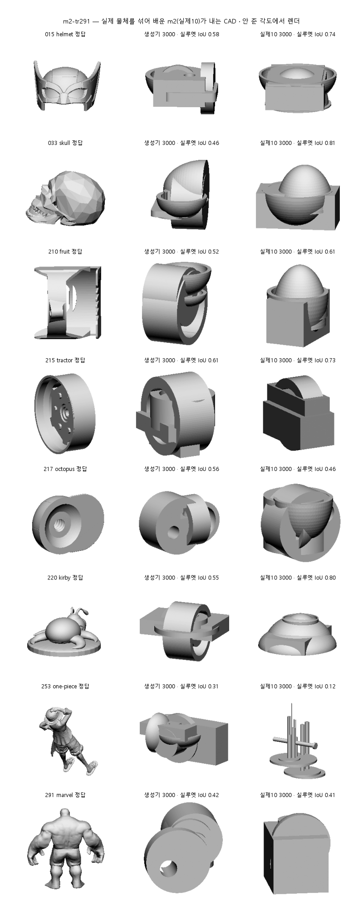

실험 m2_tr0291_h043_실제로배우기
목표 G1.2 view 모음 → 파츠별 CAD code(CadQuery · 그 전 「3 면도 → 파츠별 CAD」 · 지금 M2 는 위 · 앞 · 옆 고정 세 장만 받음 → 아무 각도 N 장으로 바꿀 것 · 11-20) · G1 첫 제품 — 피규어 · 메카 사진 여러 장 + 치수 → 숨은선 3 면도 + 파츠별 CAD · G0 임의의 이미지 → CAD 코드 · 빌린 가정 4: 정사영 · 시점앎 · 흰바탕 · 렌더화풍 · 갚는 계획: 진단 · 원화CAD짝 렌더(시점 앎) — 지지면 확인(씨앗 둘) 뒤 바탕 · 다음 실물 사진 · 각도 추정 · 디테일 자 · 목표 시험지 값: 안 잼 (!)
바탕 m2 를 실제 물체(학습 5,499 · m1 view 선 · 정답 3면도 실루엣 손실)를 섞어 더 배우면, 같은 걸음 생성기만 더 배운 것보다 연습 300 실루엣 IoU 가 오르나?
| 가설 | 주장 | 결과 | 근거 |
|---|---|---|---|
| m2-H43 | m2 가 실제 물체에서 막히는 것은 학습 분포 탓이다 — 실제 물체를 섞어 배우면 같은 양 생성기만 더 배운 것보다 실제 물체에서 오른다 | 지지 | 연습 300 빠른 실루엣 IoU 실제10 3000 0.595 대 생성기 3000 0.487 · 차 0.109 · 걸음마다 1000 0.512 · 2000 0.568 · 3000 0.595(아직 오르는 중) · 실제1 3000 0.565(차 0.078 [0.068, 0.089]) · 생성기만 더 배운 덕 0.010 [0.003, 0.017] · 반응 자기 짝 0.595 대 남의 짝 0.379(출발 0.477 대 0.379 — 입력을 보기 시작) · 출력끼리 0.481 → 0.399 · 생성기 시험 99 구조 그대로(몸 자리 L2 0.220 → 0.228 · 종류 맞음 0.363 → 0.358) |
분석
한 줄로
물음: 생성기 부품만 배운 m2에게 실제 물체(원화CAD짝 학습 5,499개)를 섞어 더 가르치면, 같은 걸음 동안 생성기만 더 배운 m2보다 처음 보는 실제 물체(연습 300)에서 오르나?
답: 오른다. 연습 300 실루엣 IoU가 생성기만 배운 m2 0.49에서 실제 물체를 섞은 m2 0.60으로 올랐다. 차 0.11, 구간 [0.10, 0.12]로 지지다. 법칙 L1(m2를 막는 것은 무엇을 보고 배웠나)의 예측이 맞았다.
왜 이 실험을 했나
앞 실험 셋이 모두 「m2가 본 것」을 가리켰다.
- tr288: 끝에서 끝으로 잃는 몫은 m2가 m1보다 크다.
- tr289: 같은 학습을 더 하면 오른다.
- tr290: 어휘 천장은 0.885인데 m2는 0.47이다.
그런데 m2는 실제 물체를 한 번도 본 적이 없다. 사용자도 「m2는 아예 학습이 안 되었네」라고 짚었다. 우리 목표는 이미지 → view → CAD 코드이고, 그 길에서 m2 자리가 막혀 있다.
바꾼 것 하나
더 배울 때 섞는 자료. 생성기 묶음(128개)에 실제 물체 묶음(32개)을 더했다.
- 입력: m1이 그린 선 두 장 + 각도.
- 손실: m2 출력을 부드럽게 그려 만든 3면도 실루엣과 정답 3면도 실루엣의 차이.
- 무게: 주 팔 10, 같이 잰 팔 1.
나머지는 대조(생성기만)와 같다.
- 출발 무게: view 60
- 학습 설정: 학습률, 씨앗 291, 3,000걸음, 생성기 묶음 순서
결과

| 실제 섞음(무게 10) | 생성기만(대조) | 출발 | 어휘 천장 | |
|---|---|---|---|---|
| 연습 300 실루엣 IoU | 0.60 | 0.49 | 0.48 | 0.89 |
실루엣 IoU는 세 방향(위·앞·옆)에서 본 그림자가 정답과 겹치는 비율이다. 1이 완벽이다.
왜 이렇게 나왔나
확인한 것
- 생성기만 더 배운 효과는 작다: 0.01에 그쳤다(구간 [0.003, 0.017]). 오른 몫 거의 전부가 실제 물체 덕이다.
- 이제 입력을 본다: m2 출력을 자기 물체 정답과 견준 값은 0.60, 남의 물체 정답과 견준 값은 0.38이다. 출발 m2는 0.48 대 0.38이었다.
- 출력이 덜 뭉친다: 출력끼리 닮은 정도가 0.48에서 0.40으로 내려갔다.
- 생성기 부품 실력은 그대로다: 생성기 시험의 몸 자리와 종류 맞음이 거의 안 변했다. 배운 걸 잃지 않았다.
- 아직 오르는 중이다: 1,000걸음 0.51 → 2,000걸음 0.57 → 3,000걸음 0.60. 끝까지 배우지 않았다.
짐작 (아직 확인 안 함)
- 253(원피스 피규어)은 가는 막대 몇 개로 나왔다(0.12). 손실이 실루엣뿐이라, 실루엣만 맞추는 엉뚱한 몸 조합을 배웠을 수 있다. 사용자가 말한 복셀(양자화) 정답이 이걸 막을지 다음에 잰다.
한계
- 씨앗 하나: 한 번만 돌렸다.
- 3,000걸음에서 멈춤: 곡선이 아직 오르는 중이다.
- 자가 빠른 실루엣 하나: 표면 F@0.02는 안 쟀다. tr292의 자와 다르다.
- 학습 코드 바꿈: 실제 팔이 GPU 8 GB에 안 들어가, 실제 묶음 32개를 8개씩 넷으로 나눠 기울기를 더했다. 같은 기울기라 카드 설정은 그대로다.
배운 것과 다음
m2가 실제 물체에서 바닥이던 이유는 실제 물체를 안 봐서였다 — 보여 주니 0.11 올랐고, 아직 오르는 중이다.
- 더 오래, 씨앗 둘로 확인 실험을 하고, 복셀 정답을 손실에 더하는 팔을 같이 돌린다.
- 가장 잘 배운 m2로 tr292를 다시 돌린다. 실제를 배운 m2와 에이전트를 비교하고, 합치기(H45)도 다시 잰다.